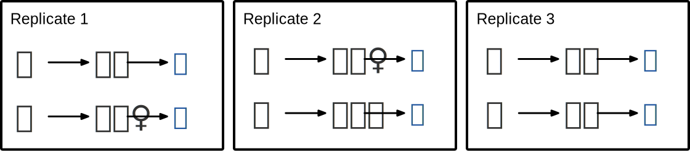

| block | unit | trt | response |
|---|---|---|---|
| 1 | 1 | A | 10.1 |
| 2 | 2 | A | 9.8 |
| 3 | 3 | B | 8.8 |
| 1 | 4 | B | 8.8 |
| 2 | 5 | C | 7.4 |
| 3 | 6 | C | 7.5 |
2 Principles
All experiments have a potential to go wrong – plans may not be followed to the letter; you can’t distinguish which factor had the effect; or unknown factor is affecting the response. The degree of how wrong it went can vary but in some cases you wouldn’t even know it went wrong!
In designing an experiment, there are some safety measures that you can put in place to minimise potential issues. The basic statistical principles of experimental design outlined below form some of these safety measures.
2.1 Randomisation
Randomisation in the context of experimental design means that the treatment allocation to units were probabilistically determined by a mechanism where the outcome of the allocation is not (consciously or unconsciously) influenced by those involved in the experiment. The opposite spectrum of randomisation is systematic allocations of treatments to units – this means that the allocations are not probabilistic and if you know the systematic order, then you can precisely infer the allocation.
Randomisation is like insurance
You buy insurance for “just-in-case” scenarios. In some sense, randomisation is like buying insurance. You are not sure what nuisance factors or lurking variables might be confounded with the factors of your interest; you hedge against it by using randomisation.
Randomisation is a core principle of experimental design. When you conduct an experiment, you are investigating factors to understand some process or phenomenon, and there will be factors which affect the response that you don’t know about – if you did, you could try to control that variable in your experiment. Randomisation protects the experiment, with no guarantee however, from potential bias.
How to randomise
Typically you can use some software to draw a random sample; in this instance it’d be a good idea to ensure this randomisation can be replicated. In R, this is typically achieved by using set.seed().
In some cases, you can use physical tools to do your randomisation so long as the tool doesn’t introduce some bias. E.g. flipping an unbiased coin or blindly drawing a paper with a number written from a covered box. While it’s easier to replicate the randomisation using a computational tool like R, it’s far more important to present the treatment allocation in a manner that the subjects involved in the experiment can accept it. For example, a water-sensitive revitalisation is planned for settlements in a developmental country such that half the settlements will be allocated to early intervention, the other half late intervention. The local community doesn’t have an understanding about randomisation but the concept of lottery is familiar – a grand ceremony is taken place with representative of the settlements drawing out a ball that allocates the settlement to early or late intervention.
Not all experiments can allocate treatments to units randomly, e.g. you can’t get your participants to smoke to study the effect of smoking, nor can you get a random agricultural land to have a drought to study how well a crop grows under drought conditions. These types of experiments are referred to as quasi-experiments or natural experiments.
2.2 Optimisation
Optimisation in the context of experimental design generally means that the treatment allocation to units were found by optimising some given criteria, usually denoted by a single letter (A, C, D, etc). These optimality-criteria are based on a statistical model, say,
\[\begin{equation} \boldsymbol{y} = \mathbf{X}\boldsymbol{\beta} + \boldsymbol{e},\end{equation}\] where \(\boldsymbol{y}\) is a vector of yet unobserved responses, \(\boldsymbol{\beta}\) is a vector of experimental factor effects (e.g. treatment, block, etc), \(\mathbf{X}\) is the so-called design matrix (comprising of 0s and 1s) that map the experimental factor levels to a response, and \(\boldsymbol{e}\) is a vector of errors.
If we assume \(\boldsymbol{e} \sim N(\boldsymbol{0}, \sigma^2\mathbf{V})\) where \(\mathbf{V}\) is a positive definite covariance matrix (often assumed as \(\sigma^2\mathbf{I}\)) and \(\boldsymbol{\beta}\) are fixed effects, then \(\hat{\boldsymbol{\beta}} = (\mathbf{X}^\top\mathbf{V}^{-1}\mathbf{X})^{-1}\mathbf{X}^\top\mathbf{V}^{-1}\boldsymbol{y}\) and \(var(\hat{\boldsymbol{\beta}}) = \sigma^2(\mathbf{X}^\top\mathbf{V}^{-1}\mathbf{X})^{-1}\) where \(\mathbf{X}\) is assumed to be full rank. Note that the construction of \(\mathbf{X}\) is what we normally have control over at the experimental design stage.
Where \(\mathbf{X}\) is not full rank
If \(\mathbf{X}\) is not full rank, then there are many possible inverses of \(\mathbf{X}^\top\mathbf{V}^{-1}\mathbf{X}\), termed generalised inverse with notation as \((\mathbf{X}^\top\mathbf{V}^{-1}\mathbf{X})^{-}\). In these circumstances, the software generally makes choices for you (most likely without you knowing) of how either to modify \(\mathbf{X}\) or the generalised inverse is constructed. In most cases this doesn’t pose any detrimental consequences as most optimal criteria tends to be invariant to the choice of the generalised inverse.
Under experiments with multiple factors (which is most experiments), including where interaction effects are assumed, \(\mathbf{X}\) is not full rank. We assume that \(\mathbf{X}\) is full rank for this book, unless there is a need to explicitly address the issue.
Where \(\mathbf{V}\) is singular
In some software, \(\mathbf{V}\) may (inadvertentnly or not) be allowed to be positive semi-definite matrix. This causes issues when \(\mathbf{V}\) becomes singular or when one of the eigenvalues of \(\mathbf{V}\) is near-zero and there are some strategies that the software employs to tackle these issues.
Most optimal-criteria is based on optimising some function based on \((\mathbf{X}^\top\mathbf{V}^{-1}\mathbf{X})^{-1}\) or \(\mathbf{X}^\top\mathbf{V}^{-1}\mathbf{X}\), also known as the information matrix. The list of optimal-criteria are shown in Table XX.
| Criteria | Description | Notes |
|---|---|---|
| A-optimality | minimise \(\text{tr}\left((\mathbf{X}^\top\mathbf{V}^{-1}\mathbf{X})^{-1}\right)\) | average variance of the estimators of parameters of interest |
| C-optimality | minimise \(\text{var}(\boldsymbol{c}^\top\hat{\boldsymbol{\beta}})\) where \(\boldsymbol{c}\) is pre-determined vector of constants | |
| D-optimality | maximise \(\text{det}\left(\mathbf{X}^\top\mathbf{V}^{-1}\mathbf{X}\right)\) | sometimes this is adjusted to \([\text{det}\left(\mathbf{X}^\top\mathbf{V}^{-1}\mathbf{X}\right)]^{\frac{1}{k}}\) where \(k\) is the number of parameter |
| E-optimality | maximise the minimum eigenvalue of \(\mathbf{X}^\top\mathbf{V}^{-1}\mathbf{X}\) |
The most popular optimal-criterions are A- and D-optimality.
Optimised designs are not necessary randomised
This means that even if the design has been constructed as to optimise some criteria, you are possibly missing out on the benefits of the randomisation. Some experimental structure results in a multiple possible treatment allocations with the same optimal criteria and the software may be selecting this in a systematic way.
Optimised designs for complex experiments
Optimised designs for complex experiments can be computationally expensive. In these cases, the algorithm may be searching heuristically. You should try searching under different starting values and compare the optimal criteria obtained.
2.2.1 Bias and confounding
Biases can lurk into an experiment in many forms.
Examples of biases
- To test the effectiveness of flu vaccines, a trial for vaccine 1 is done in January and a trial for vaccine 2 is done in July.
- To study the effects of different diets for pigs, diet A is given to the first set of pigs that the farmer caught and the remaining (faster) pigs received diet B.
- A doctor decides to assign the treatment to the sickest patients while the control treatment is assigned to the healthiest patients.
Biases are not necessary introduced into the study with malicious or known intent (e.g. trying to ensure certain treatments have a better outcome by manipulating the treatment assignment). The third example is a case where the intention of the doctor is well but is introducing a selection bias.
Bias is counteracted generally by employing randomisation in the design.
Confounding, which may or may not be the result of a bias, is when the factors in the design are highly correlated which makes it hard to distinguish which factor influenced the outcome with certainty. If an experimental factor of interest is confounded with some other factor, whether that be latent or not, then you do need to redo your experiment removing or adjusting this confounding.
All experiments are confounded and some confounding are okay
In essence, all experiments are confounded. In an unstructured experiment, the units are confounded with treatment – even with enough replications, you can only distinguish the effects if the response is an additive model of contributions from the treatment and the individual, otherwise there’s little value you will get from this experiment.
Some confounding are acceptable. For example, in a randomised block experiment, different technicians may be assigned to each block. This will confound the effects of blocks and effects of technicians, but so long as these effects can be disaggregated from noise and the treatment effects, it’s not of a high concern to delineate the individual contributions from blocks and technicians.
2.3 Replications, repetition and duplication
In a comparative experiment, treatments are allocated to units but every unit has an individual variation (with exceptions for some, e.g. computer experiments). To distinguish the individual variation from the treatment variation, you need replication of the treatment allocation to another independent unit.
As a simple example, consider Figure 2.1 – 2 treatments are allocated to 3 participants each. If you ever only look at the outcome of a single replication in isolation, you wouldn’t know whether the outcome is a result of the treatment the participant received or some innate biological attribute of the participant, thus nothing to do with the treatment. Only by replicating and getting similar results with other sets of participants can you start to feel confident that the outcome may be associated with the treatment.

Suppose now that in Figure 2.1, participants in Replicate 3 are biological sisters of participants in Replicate 1. In this case, Replicate 3 is not a complete replicate. As biological sisters, they would share genetics (and perhaps the environment) that makes it harder to feel confident that the outcome is due to treatment instead of other shared factors between the participants.
Common phrases for replication
When we say:
- “no replication”, this is equivalent to one replication,
- “a [particular treatment level] is replicated” then it means that the treatment level has two or more replications,
- “unreplicated experiment” means that the experiment has no replication,
- “partial replication” means that a proportion of the treatments are replicated.
Partially replicated experiment
Consider an experiment with two treatments with two replicates for the first treatment and one replicate for the second treatment. This is a partially replicated (or \(p\)-rep) experiment and proportion replicated (\(p\)) is 0.5.
A distinction must be made about replication, repetition and duplication. Replication refers to the allocation of same treatment to independent units. Repetition refers to the allocation of same treatment to another unit, which may or may not be independent. Duplication refers to repeated measurement of the same unit. This distinction often cannot be made just looking at the experimental data.
2.3.1 How many replications?
Where treatments are independent (see Section X on correlated treatments), then it’s optimal to have equal, or near-equal, number of replications for each treatment.
A related question to the number of replications is the sample size calculation. Sample size calculation generally requires users to pre-specify a number of parameters, e.g. statistical power and expected effect size (or its difference).
Larger sample size (and thus the number of replications) is always statistically desired for higher certainty in the analysis, but practical constraints will always counteract this. Avoid designing an unreplicated experiment. It’s better to have some replication, even if it’s only one more.
Above are statistical perspectives for the desired number of replications. In practice, the number of replications are also determined by non-statistical reasons. E.g., there are only limited number of treatments in stock; not enough subjects that qualify for treatments, time constraints and so on.
Pseudo-replications
Pseudo-replication refers to the analysis where repetitions of the treatment are treated as replications.
2.4 Blocking
Blocks are factors that group units that are alike together. Some units have natural discrete divisions, e.g. sex for animals, that should be used for blocking. Some units differ in qualities on a continuous scale (e.g. age, weight, space, time) and artificial thresholds may be chosen to group these units.
How to assign units to blocks
Where possible, it is better to have blocks of equal or near-equal size. Also where possible, it is better to have at least one occurence of each treatment in every block. This is of course not possible if the block size is smaller than the number of treatments – in this case, it is desirable to have every pair of treatments appear equal or near-equal times across blocks.